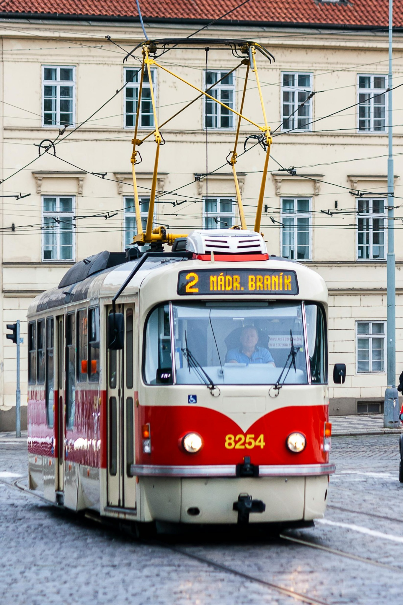
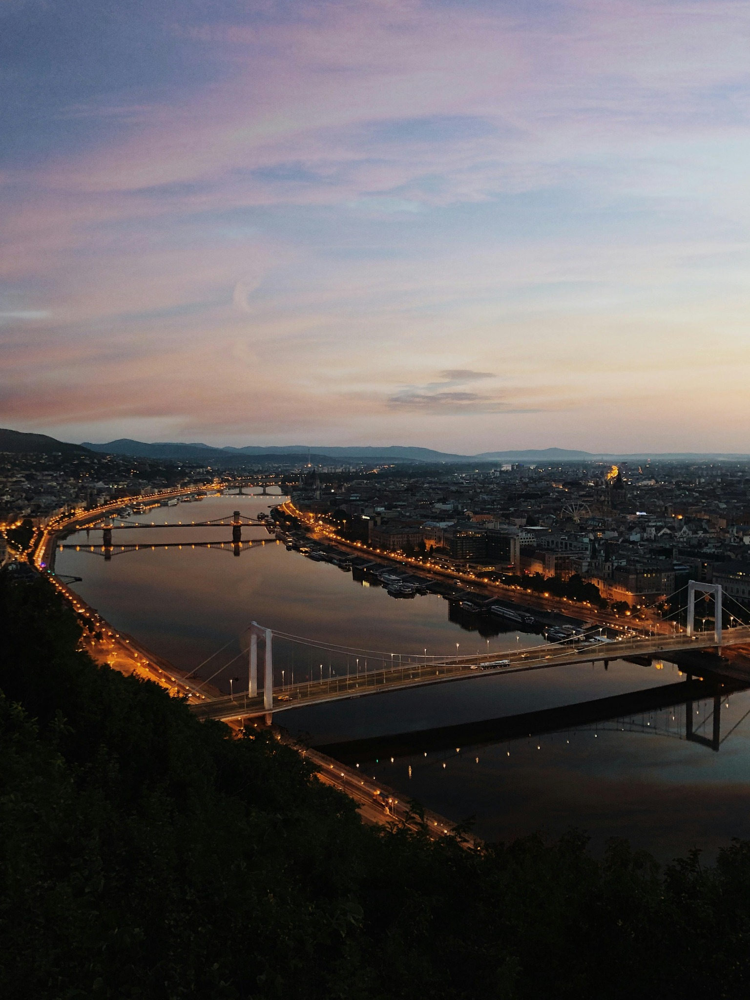
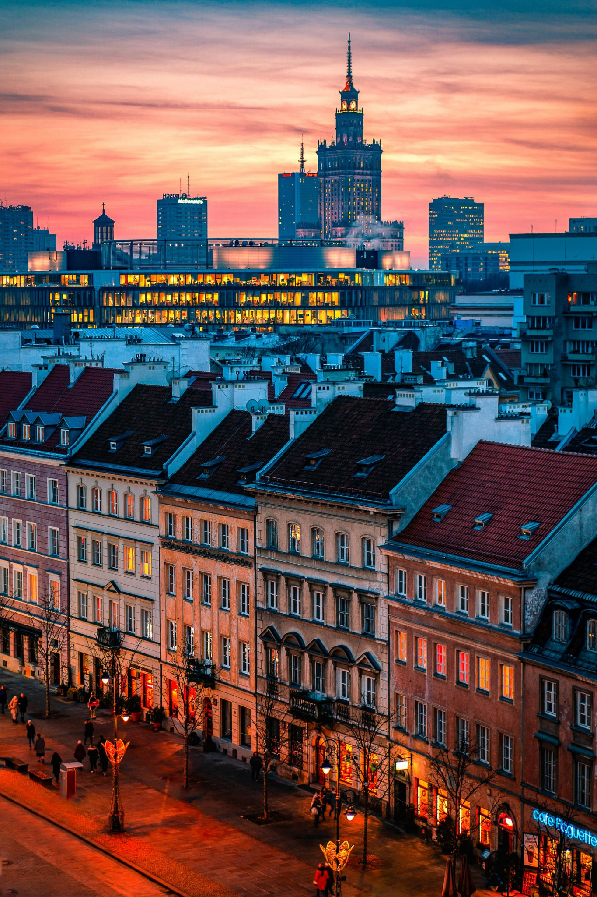
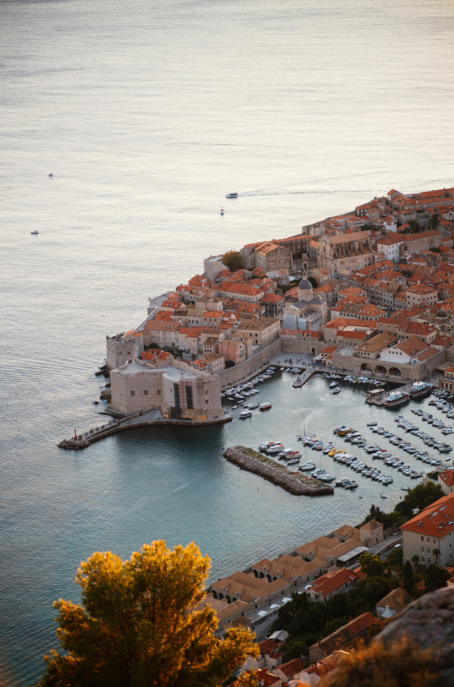
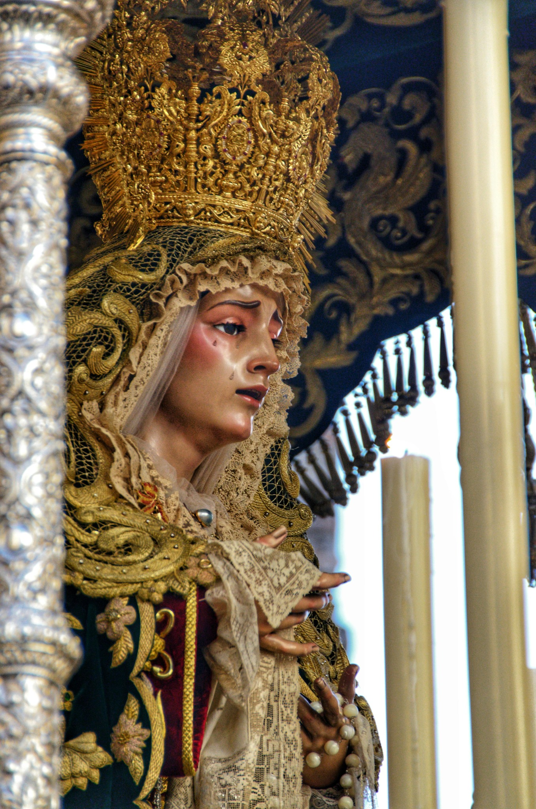

O que muita gente chama de Leste Europeu é, na prática, um mosaico de atmosferas: Europa Central, Bálcãs, cidades danubianas, costas do Adriático, capitais de passado soviético, castelos, igrejas ortodoxas e lugares que ainda passam uma sensação de descoberta. Esta página funciona como hub editorial dessa região.
O Leste Europeu costuma atrair por vários motivos ao mesmo tempo: cidades lindas a um custo muitas vezes mais equilibrado do que no eixo mais óbvio do oeste, arquitetura forte, memória imperial e soviética, noites de verão muito vivas, inverno com clima de conto de fadas e uma sensação muito boa de “Europa ainda não totalmente domesticada”.
Castelos, praças, igrejas, muralhas, termas, cafés, trens, rios, mercados e uma identidade visual muito forte ajudam a costurar a região.
Praga e Budapeste não contam a mesma história que Dubrovnik, Varsóvia ou Sófia. A viagem melhora muito quando a região é lida por eixos, e não como um pacote genérico.
Cada uma dessas páginas-filhas abre um universo diferente dentro da região.

Cidade medieval, cerveja, castelos, tram e atmosfera de conto de fadas.

Danúbio, termas, império austro-húngaro, cafés e uma das cidades mais belas da Europa.

Varsóvia, Cracóvia, memória histórica, cidades fortes e uma Europa Central muito rica.

Muralhas, Adriático, Dubrovnik, Kotor, road trip e verão europeu com alma própria.

Castelos, Transilvânia, mosteiros, montanhas, ortodoxia e uma Europa ainda mais misteriosa.
De capitais imperiais a muralhas e igrejas monumentais, a região entrega muito repertório visual.
Muitas cidades ainda permitem viver uma Europa muito forte por valores mais razoáveis do que no eixo mais clássico.
A sensação de novidade e de repertório menos repetido costuma ser um dos grandes atrativos.
Impérios, guerras, fronteiras, religião, comunismo e reconstrução aparecem com muita força no percurso.
O Leste Europeu pode ser medieval, imperial, soviético, marítimo, ortodoxo, danubiano e profundamente charmoso ao mesmo tempo. A melhor forma de navegar isso é por eixos — e essas cinco portas já constroem uma base excelente.